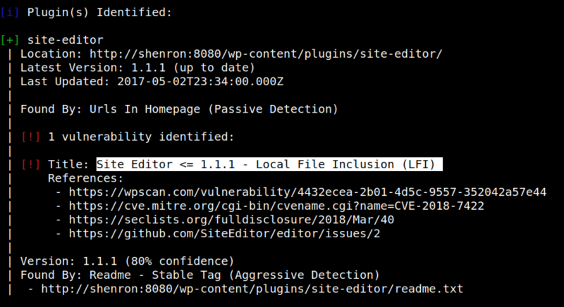
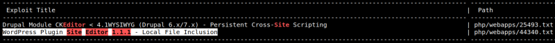

3.1 Wpscan
1. Use “wpscan” to find more about Wordpress.
$wpscan --url http://shenron:8080 --enumerate --api-token <your token from www.wpscan.com/profile>
Output:

There's a vulnerability on the “Site Editor” that allow you LFI.
2. Search an exploit.
$searchsploit site editor 1.1.1
Output:
